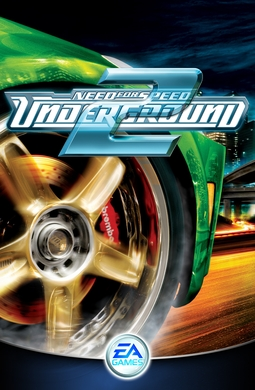

El tuning de calle que lleno cybers y livings en 2004
02

NEED FOR SPEED: UNDERGROUND 2
CONSOLAPC · PlayStation 2 · Xbox · GameCube
AÑO2004
DESARROLLADOREA Black Box (Electronic Arts)
GENEROCarreras arcade / tuning
EN LA COLECCION
03
CONTEXTO DE EPOCA
Llegamos a 2004
Tras el exito de Underground, EA Black Box llevo la saga a Bayview, una ciudad abierta inspirada en San Francisco y Los Angeles, y le dio al tuning mas opciones que nunca: neones, hidraulicos y subwoofers. Salio el 15 de noviembre de 2004 y vendio cerca de 11 millones de copias.
04
COMPARATIVA
PC · PLAYSTATION 2 · XBOX · GAMECUBE · 2004
TARROVISIONCH 01
NO SIGNAL
Inserta gameplay aqui
VS
TARROVISIONCH 02
NO SIGNAL
Inserta gameplay aqui
05
JUGABILIDAD HOY
PC · PLAYSTATION 2 · XBOX · GAMECUBE · 2004 · GAMEPLAY
TARROVISIONCH 03
NO SIGNAL
Inserta gameplay aqui
EL DATOUn mundo abierto donde manejas hasta cada carrera, nitro que se recarga con derrapes y pasadas rasantes, y un taller con ajuste en dinamometro. Tunear el auto era tan importante como ganar la carrera.
06
GRAFICOS Y SONIDO HOY
PC · PLAYSTATION 2 · XBOX · GAMECUBE · 2004 · GAMEPLAY
TARROVISIONCH 04
NO SIGNAL
Inserta gameplay aqui
EL DATOBayview de noche, con rascacielos que banan las calles en luz, cutscenes en formato comic y una banda sonora que fue nominada al premio D.I.C.E. a mejor soundtrack. Deja el 2004 clavado en la memoria.
07
VEREDICTO RETROTARROS
MEMORABLE
Hay que jugarlo por lo que dio a toda una generacion: la libertad de recorrer una ciudad entera, una personalizacion casi infinita y esa sensacion de tener el auto mas llamativo del barrio. Un buen rato garantizado y nostalgia pura de los tiempos del tuning.
08
RETROTARROS
SUSCRIBETE
Activa la campana para no perderte la proxima reseña. ¿Que juego quieres que revisemos? Comenta abajo.